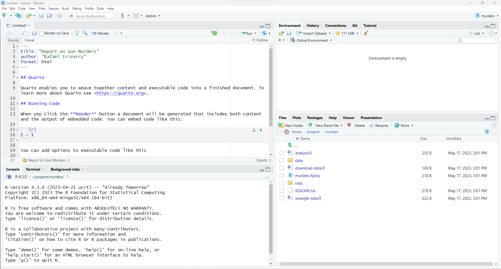

cd ~
cd projects
mkdir murders
cd murders
mkdir data rdas 22 Reproducible projects with markdown
The final product of a data analysis project is often a report. Many scientific publications can be thought of as a final report of a data analysis. The same is true for news articles based on data, an analysis report for your company, or lecture notes for a class on how to analyze data. The reports are often on paper or in a PDF that includes a textual description of the findings along with some figures and tables resulting from the analysis.
Imagine that after you finish the analysis and the report, you are told that you were given the wrong dataset, you are sent a new one and you are asked to run the same analysis with this new dataset. Or what if you realize that a mistake was made and need to re-examine the code, fix the error, and re-run the analysis? Or imagine that someone you are training wants to see your code and be able to reproduce the results to learn about your approach?
Situations like the ones just described are actually quite common for a data analyst. Here, we describe how you can keep your data science projects organized with RStudio so that re-running an analysis is straight-forward. We then demonstrate how to generate reproducible reports with quarto, or R markdown, and the knitR package in a way that will greatly help with recreating reports with minimal work. This is possible due to the fact that markdown documents permit code and textual descriptions to be combined into the same document, and the figures and tables produced by the code are automatically added to the document.
22.1 RStudio projects
RStudio provides a way to keep all the components of a data analysis project organized into one folder and to keep track of information about this project, such as the Git status of files, in one file. In Section Section 21.8 we demonstrate how RStudio facilitates the use of Git and GitHub through RStudio projects. In this section we quickly demonstrate how to start a new a project and some recommendations on how to keep these organized. RStudio projects also permit you to have several RStudio sessions open and keep track of which is which.
To start a project, click on File and then New Project. Often we have already created a folder to save the work, as we did in Section Section 20.7 and we select Existing Directory. Here we show an example in which we have not yet created a folder and select the New Directory option.


Then, for a data analysis project, you usually select the New Project option:

Now you will have to decide on the location of the folder that will be associated with your project, as well as the name of the folder. When choosing a folder name, just like with file names, make sure it is a meaningful name that will help you remember what the project is about. As with files, we recommend using lower case letters, no spaces, and hyphens to separate words. We will call the folder for this project my-first-project. This will then generate a Rproj file called my-first-project.Rproj in the folder associated with the project. We will see how this is useful a few lines below.

You will be given options on where this folder should be on your filesystem. In this example, we will place it in our home folder, but this is generally not good practice. As we described in Section Section 20.7 in the Unix chapter, you want to organize your filesystem following a hierarchical approach and with a folder called projects where you keep a folder for each project.

When you start using RStudio with a project, you will see the project name in the upper right corner. This will remind you what project this particular RStudio session belongs to. When you open an RStudio session with no project, it will say Project: (None).
When working on a project, all files will be saved and searched for in the folder associated with the project. Below, we show an example of a script that we wrote and saved with the name code.R. Because we used a meaningful name for the project, we can be a bit less informative when we name the files. Although we do not do it here, you can have several scripts open at once. You simply need to click File, then New File and pick the type of file you want to edit.

One of the main advantages of using Projects is that after closing RStudio, if we wish to continue where we left off on the project, we simply double click or open the file saved when we first created the RStudio project. In this case, the file is called my-first-project.Rproj. If we open this file, RStudio will start up and open the scripts we were editing.


Another advantage is that if you click on two or more different Rproj files, you start new RStudio and R sessions for each.
22.2 Markdown
Markdown is a format for literate programming documents that is widely used to generate html pages or pdf documents. Literate programming weaves instructions, documentation, and detailed comments in between machine executable code, producing a document that describes the program that is best for human understanding (Knuth 1984). You can learn more about markdown here: https://www.markdowntutorial.com/. Unlike a word processor, such as Microsoft Word, where what you see is what you get, with markdown, you need to compile the document into the final report. The markdown document looks different than the final product. This approach seems like a disadvantage at first, but it can save you time in the long run. For example, instead of producing plots and inserting them one by one into the word processing document, the plots are automatically added when the document is compiled. If you need to change the plots, you just recompile the document after editing the code that produces the plot.
In R, we can produce literate programming documents using Quarto or R Markdown. We recommend using Quarto because it is a newer and more flexible version of R markdown that permits the use of languages other than R. Because R markdown preceded Quarto by several years, many public and educational literate programming documents are written in R markdown. However, because the format is similar and both use the knitr package, described in Section Section 22.2.4, to execute the R code, most existing R markdown files can be rendered with Quarto, without modification.
In RStudio, you can start either a Quarto or R markdown document by clicking on File, New File, then Quarto Document or R Markdown, respectively. You will then be asked to enter a title and author for your document. We are going to prepare a report on gun murders so we will give it an appropriate name. You can also decide what format you would like the final report to be in: HTML, PDF, or Microsoft Word. Later, we can easily change this, but here we select html as it is the preferred format for debugging purposes:


This will generate a template file:

As a convention, we use qmd and Rmd suffixes for Quarto and R markdown files, respectively.
Once you gain experience with markdown, you will be able to do this without the template and can simply start from a blank template.
In the template, you will see several things to note.
22.2.1 The header
At the top you see:
---
title: "Report on Gun Murders"
author: "Rafael Irizarry"
format: html
---The things between the --- is the YAML header. YAML is a widely used language mainly used for providing configuration data. With Quarto and R markdown it is mainly used to define options for the document. You can define many other things in the header than what is included in the template. We don’t discuss those here, but much information is available from the quarto guide. The one parameter that we will highlight is format. By changing this to, say, pdf, we can control the type of output that is produced when we compile. The title and author parameters are automatically filled because we filled in the blanks in the RStudio diaglog box that pops up when starting a new document.
22.2.2 R code chunks
In various places in the document, we see something like this:
```{r}
1 + 1
```These are the code chunks. When you compile the document, the R code inside the chunk, in this case 1+1, will be evaluated and the result included in that position in the final document.
To add your own R chunks, you can type the characters above quickly with the key binding command-option-I on the Mac and Ctrl-Alt-I on Windows.
This applies to plots as well; the plot will be placed in that position. We can write something like this:
```{r}
plot(1)
```By default, the code will show up as well. To avoid having the code show up, you can use an argument, which are annotated with #| To avoid showing code in the final document, you can use the argument echo: FALSE. For example:
```{r}
#| echo: false
1+1
```We recommend getting into the habit of adding a label to the R code chunks. This will be very useful when debugging, among other situations. You do this by adding a descriptive word like this:
```{r}
#| label: one-plus-one
1+1
```22.2.3 Global excecution options
If you want to apply an option globally, you can include in the header, under execute. For example adding the following line to the header make code not shou up, by default:
execute:
echo: falseWe will not cover more details here, but as you become more experienced with R Markdown, you will learn the advantages of setting global options for the compilation process.
22.2.4 knitR
We use the knitR package to compile Quarto or R markdown documents. The specific function used to compile is the knit function, which takes a filename as input. RStudio provides a button that makes it easier to compile the document. For the screenshot below, we have edited the document so that a report on gun murders is produced. You can see the file here: https://raw.githubusercontent.com/rairizarry/murders/master/report.qmd. You can now click on the Render button:

Note that the first time you click on the Render button, a dialog box may appear asking you to install packages you need. Once you have installed the packages, clicking Render will compile your Quarto file and the resulting document will pop up.
This particular example produces an html document which you can see in your working directory. To view it, open a terminal and list the files. You can open the file in a browser and use this to present your analysis. You can also produce a PDF or Microsoft document by changing: format: html to format: pdf or format: docx. Note this is one difference between Quarto and R markdown. With R markdown we use output: html_document, output: pdf_document, or output: word_document.
We can also produce documents that render on GitHub using format: gfm, which stands for GitHub flavored markdown. This will produce a markdown file, with suffix md, that renders nicely on GitHub. Because we have uploaded these files to GitHub, you can click on the md file and you will see the report as a webpage:

This is a convenient way to share your reports.
22.2.5 More on markdown
There is a lot more you can do with R markdown. We highly recommend you continue learning as you gain more experience writing reports in R. There are many free resources on the internet including:
- The Quarto Guide: https://quarto.org/docs/guide/
- RStudio’s tutorial: https://quarto.org/docs/get-started/hello/rstudio.html
- The knitR book: https://yihui.name/knitr/
22.3 Organizing a data science project
In this section we put it all together to create the US murders project and share it on GitHub.
22.3.1 Create directories in Unix
In Section Section 20.7 we demonstrated how to use Unix to prepare for a data science project using an example. Here we continue this example and show how to use RStudio. In Section @ref(prep-project we created the following directories using Unix:
22.3.2 Create an RStudio project
In the next section we will use create an RStudio project. In RStudio we go to File and then New Project… and when given the options we pick Existing Directory. We then write the full path of the murders directory created above.


Once you do this, you will see the rdas and data directories you created in the RStudio Files tab.

Keep in mind that when we are in this project, our default working directory will be ~/projects/murders. You can confirm this by typing getwd() into your R session. This is important because it will help us organize the code when we need to write file paths.
Try to always use relative paths in code for data science projects. These should be relative to the default working directory.** The problem with using full paths is that your code is unlikely to work on file systems other than yours since the directory structures will be different. This includes using the home directory ~ as part of your path.
22.3.3 Edit some R scripts
Let’s now write a script that downloads a file into the data directory. We will call this file download-data.R.
The content of this file will be:
url <- "https://raw.githubusercontent.com/rafalab/dslabs/master/inst/
extdata/murders.csv"
dest_file <- "data/murders.csv"
download.file(url, destfile = dest_file)Notice that we are using the relative path data/murders.csv.
Run this code in R and you will see that a file is added to the data directory.
Now we are ready to write a script to read this data and prepare a table that we can use for analysis. Call the file wrangle-data.R. The content of this file will be:
Again note that we use relative paths exclusively.
In this file, we introduce an R command we have not seen: save. The save command in R saves objects into what is called an rda file: rda is short for R data. We recommend using the .rda suffix on files saving R objects. You will see that .RData is also used.
If you run this code above, the processed data object will be saved in a file in the rda directory. Although not the case here, this approach is often practical because generating the data object we use for final analyses and plots can be a complex and time-consuming process. So we run this process once and save the file. But we still want to be able to generate the entire analysis from the raw data.
Now we are ready to write the analysis file. Let’s call it analysis.R. The content should be the following:
If you run this analysis, you will see that it generates a plot.
22.3.4 Create some more directories using Unix
Now suppose we want to save the generated plot for use in a report or presentation. We can do this with the ggplot command ggsave. But where do we put the graph? We should be systematically organized so we will save plots to a directory called figs. Start by creating a directory by typing the following in the terminal:
mkdir figsand then you can add the line:
ggsave("figs/barplot.png")to your R script. If you run the script now, a png file will be saved into the figs directory. If we wanted to copy that file to some other directory where we are developing a presentation, we can avoid using the mouse by using the cp command in our terminal.
22.3.5 Add a README file
You now have a self-contained analysis in one directory. One final recommendation is to create a README.txt file describing what each of these files does for the benefit of others reading your code, including your future self. This would not be a script but just some notes. One of the options provided when opening a new file in RStudio is a text file. You can save something like this into the text file:
We analyze US gun murder data collected by the FBI.
download-data.R - Downloads csv file to data directory
wrangle-data.R - Creates a derived dataset and saves as R object in rdas
directory
analysis.R - A plot is generated and saved in the figs directory.22.3.6 Initializing a Git directory
In Section Section 21.6 we demonstrated how to initialize a Git directory and connect it to the upstream repository on GitHub, which we already created in that section.
We can do this in the Unix terminal:
cd ~/projects/murders
git init
git add README.txt
git commit -m "First commit. Adding README.txt file just to get started"
git remote add origin `https://github.com/rairizarry/murders.git`
git push -u origin remote22.3.7 Add, commit, and push files using RStudio
We can continue adding and committing each file, but it might be easier to use RStudio. To do this, start the project by opening the Rproj file. The git icons should appear and you can add, commit and push using these.


We can now go to GitHub and confirm that our files are there. You can see a version of this project, organized with Unix directories, on GitHub1. You can download a copy to your computer by using the git clone command on your terminal. This command will create a directory called murders in your working directory, so be careful where you call it from.
git clone https://github.com/rairizarry/murders.githttps://github.com/rairizarry/murders↩︎